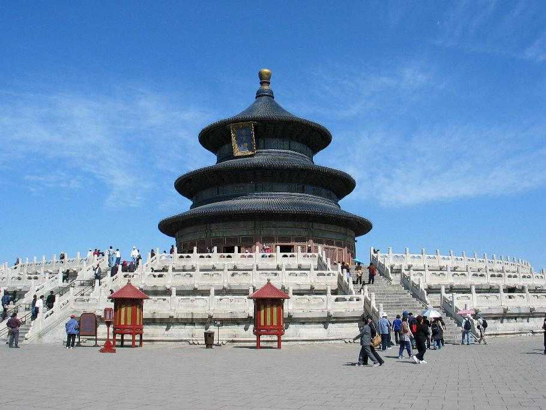
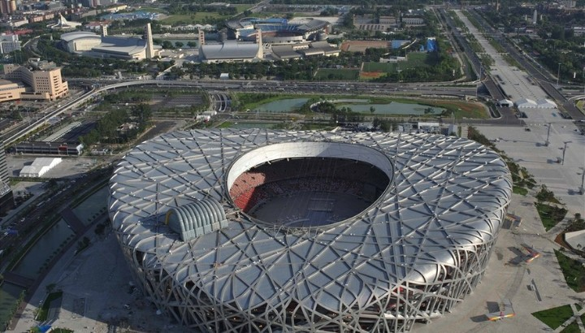
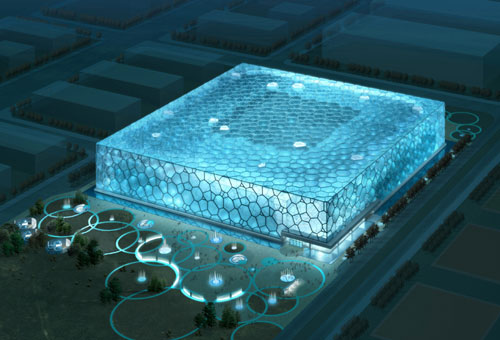

The Tiananmen Gate, a gate in the wall of the Imperial City, was built in 1415 during the Ming Dynasty. Towards the demise of the Ming Dynasty, heavy fighting between Li Zicheng and the early Qing emperors damaged (or perhaps destroyed) the gate. The Tiananmen square was designed and built in 1651, and has since enlarged four times its original size in the 1950s(Wikipedia). Now The Tiananmen Gate is used to meet and greet foreign guests and it¡¯s also a landmark building of Beijing.
The Temple of Heaven is a worthwhile place to visit in Beijing. In the ancient time it was built to offer sacrifice to the god. With the changes of the history, the Temple of Heaven experienced lots of reconstructions and occupations by different emperors and countries. And now it becomes the most magnificent building even much bigger than the Forbidden City. Overall, the Temple of Heaven is a good choice for visitors if they are willing to know and understand ancient Chinese Palace architecture and culture.
 Besides the historic and cultural places listed above, there are also some modern buildings in Beijing. The Birds Nest Stadium and the Water Cube are the arenas built for 2008 Olympic Games. These two buildings are famous for their unique appearance. The Birds Nest Stadium was named because it indeed looks like a bird nest. The Water cube looks like a rectangular box consist of water molecules. The Birds Nest Stadium is currently used for football matches and Water Cube is now a water park opened to public to let them swim and play water.